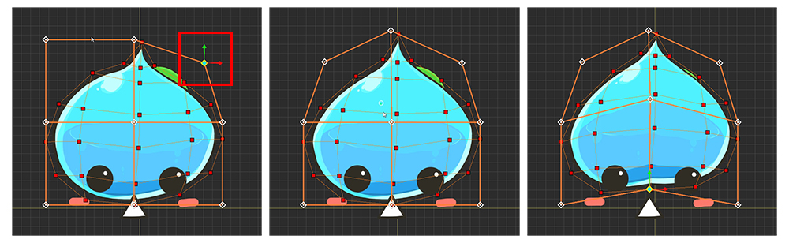
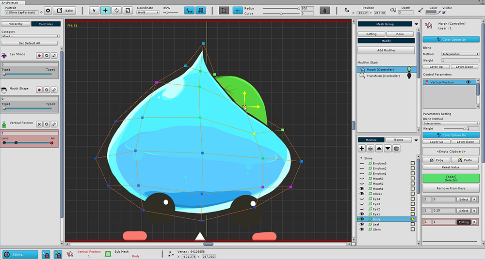
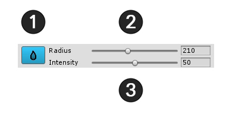
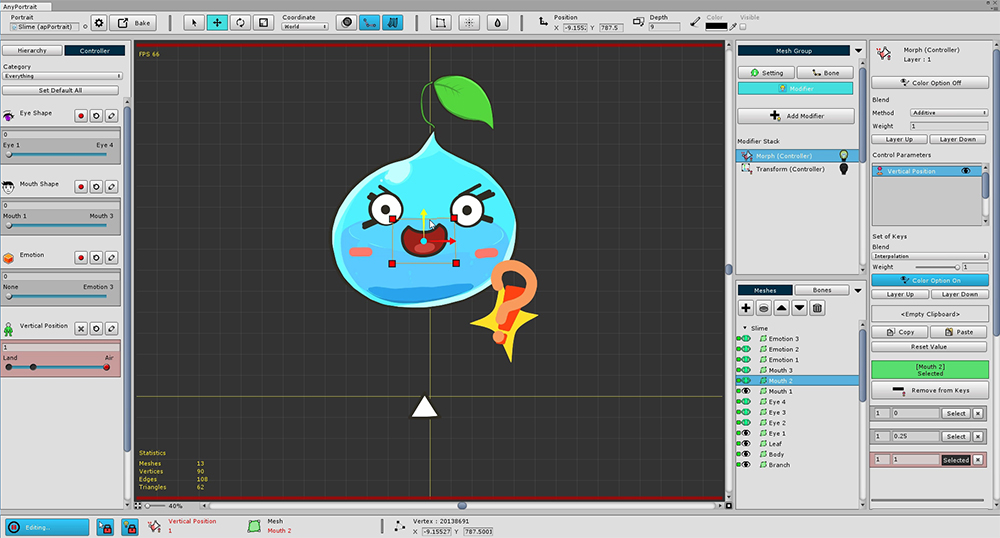
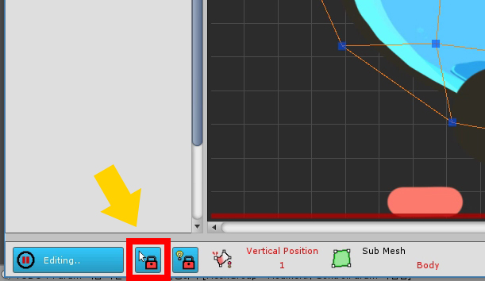

AnyPortrait > Getting Started > 1.8. Editing Vertices using various tools
1.8. Editing Vertices using various tools
1.0.0
When you use the modifier to edit vertices, you will see some tools to help you work.
You can learn how to use these tools to make things easier.

When working with vertices with the Morph modifier, three buttons appear at the top of the screen.
1. FFD : This tool controls the vertex by Free-Form Deformation method. Control points appear to allow you to edit the shape.
2. Soft Selection : When selecting and editing a vertex, the surrounding vertices are selected and moved smoothly.
3. Blur : Smoothly interpolates the shape of selected vertices.
1. FFD

When FFD is executed, 9 control points are displayed by default.
This control point can be moved, rotated, and resized as you would with vertex editing.

You can change the shape by moving the control point.
With FFD, it is possible to smoothly deform while keeping a rough shape.

After you have finished working with FFD, you must decide whether to apply or cancel it.
1. Apply : Apply your work.
2. Revert : Ignores the work and reverts.
If you do not complete the FFD and move the control parameters or perform another operation, the FFD operation history disappears. Please be careful.
Using FFD with user defined number of control points

If you press the FFD button while holding down the Ctrl , a dialog box appears for you to set the number of control points.
(On Max OSX, press the Command .)

2. Soft Selection

When Soft Selection is executed, the above UI appears.
1. Exit Soft Selection : Exit the active Soft Selection. (Shortcut: Right Click )
2. Radius : Adjusts the selected range. (Shortcut: [, ] )
3. Curve : The degree to which the surrounding vertices move smoothly.

Soft Selection lets you see which vertices are selected together through the vertex color.
It is also applied to Move, Rotate, and Scale tools so it can be useful when you want to keep smooth shape.

The lower the Curve value, the more intensively the weight near the selected vertex, the higher the Curve value, the higher the weight is applied to the farther away.
3. Blur

When you run Blur, the above UI appears.
1. Exit Blur : Exit the activated Blur. (Shortcut: Right Click )
2. Radius : Adjusts the selected range. (Shortcut: [, ] )
3. Intensity : Sets the intensity at which the vertices will change smoothly.

Select the vertices to apply the Blur to and run the Blur tool.
When you run Blur, the Blur area appears around the mouse in a circle.
If you rub it with the mouse, you can see that the deformed values are crumpled similar to the surrounding values.
The Blur tool is mainly useful when you want to work with the vertex after selecting it.

Other meshes can now be modified to accommodate the Vertical Position Control Parameter.
This can be a lot of hands-on work. Please do not burden one by one.
If other meshes can not be selected?
If you are trying to work with multiple meshes, sometimes clicking with the mouse may not work.
If the Selection Lock button at the bottom of the screen is on, you can not select another mesh.
Press the Selection Lock button or press the S to unlock it.

Why should I use Selection Lock?
If Selection Lock is off, you may try to select a vertex, but rather choose another mesh.
Attempting to select vertices by dragging with the mouse to create a region may cause the mesh selection to be deselected.
Therefore, Selection Lock is always on when modifier editing starts.
Use the shortcut S for convenient working.